Quick Start
Generating Examinee Data (Step 1)
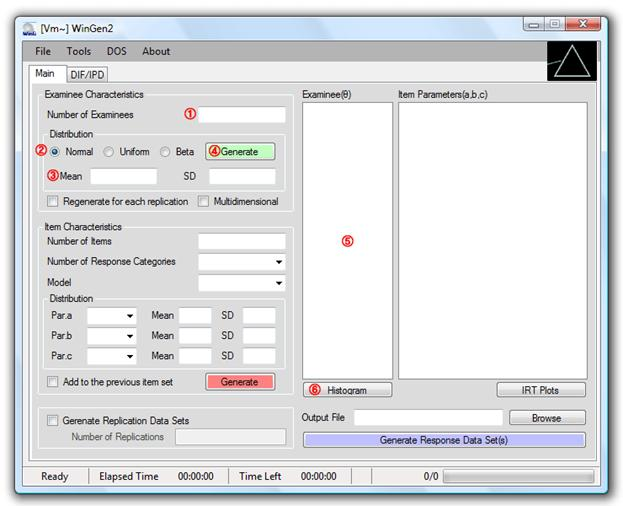
① Specify the number of examinees
② Select type of score distribution
③ Specify mean and standard deviation for a normal score distribution
or, specify minimum and maximum value for a uniform score distribution
or, specify a and b parameters for a beta score distribution
④ Click on a green ‘Generate’ button
⑤ Generated examinee theta scores should be shown in the box. The data set can be saved at ‘File > Save > Examinee Data’
⑥ Distribution of examinee thetas can be shown by clicking on the ‘Histogram’ button.
An example of generating examinee data where 50,000 examinees were drawn from a beta distribution (a=2, b=4) is shown in Figure 3.1. The use of beta distributions makes it easy to simulate skewed score distributions.
Figure 3.1 Example of Generating Examinee Data
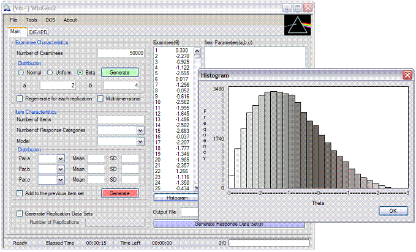
Generating Item Data (Step 2)
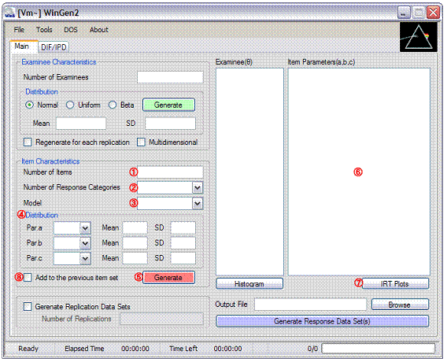
① Specify the number of items
② Specify the number of response categories. Select ‘2’ for dichotomous response data.
③ Select an IRT model
④ Select distribution of item parameters and specify properties of the distributions
⑤ Click on a red ‘Generate’ button
⑥ Generated item parameter data should be shown in the box. The data set can be saved at ‘File -> Save -> Item Parameter Data’
⑦ Item Characteristic Curves (ICCs), Test Characteristic Curve (TCC), Item Information Function Curves (IIF), and Test Information Function Curve (TIF) are provided by clicking on the ‘IRT Plots’ button
⑧ Mark the check box, ‘Add to the previous item set’, and repeat steps (① to ⑦) if another set of items (or items of different IRT models) needs to be added to a previous set of items. This option is particularly useful when a mixed format test form is to be simulated.
An example of generating item data, where 15 dichotomous items based on 3PLM and 5 polytomous items based on GRM (5 categories) are generated, is shown in Figure 3.2.
Figure 3.2 Example of Generating Item Data
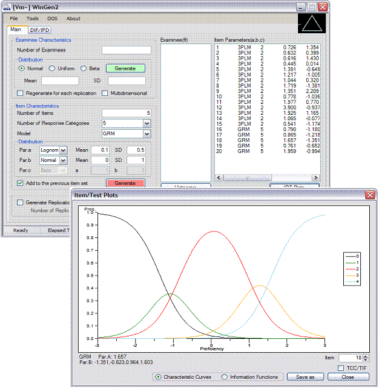
Generating Item Response Data (Step 3)
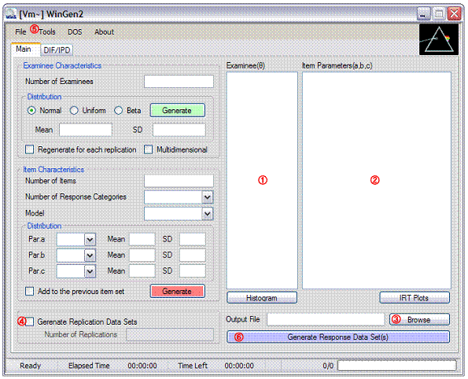
① Make sure examinee data generated in Step1 or a data set is opened with the pull-down menu, ‘File > Open > Examinee Data’
② Make sure item parameter data generated in Step2 or a data set is opened with the pull-down menu, ‘File > Open > Item Parameter Data’
③ Specify the name of the response data file by clicking on ‘Browse’
④ Check the check box and specify the number of replications if replication data are desired
⑤ Adjust options at ‘Tools -> Options’
⑥ Click on the blue ‘Generate Response Data Set(s)’ button. The data set should be seen by opening up the file with the extension of ‘.wgr’
An example of generating item data, where 15 dichotomous items based on the 3PLM and 5 polytomous items based on the GRM (5 categories) are generated, is shown in Figure 3.3.
Figure 3.3 Example of Simulating Response Data
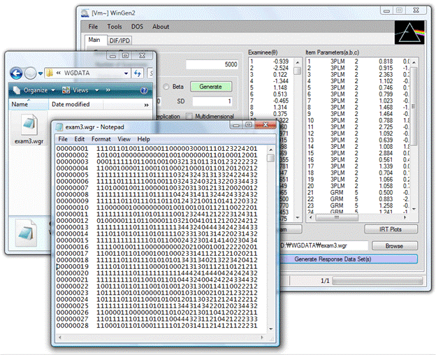
Options
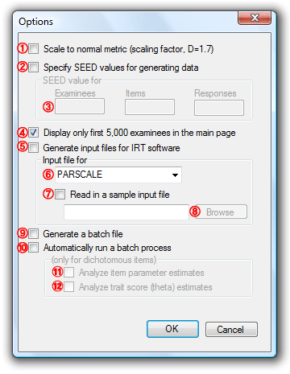
① ‘Scale to normal metric (scaling factor, D=1.7)’ (default: unchecked). By checking this option, WinGen generates item response data on the same scale as the normal-ogive model. Even when the normal ogive model though is of little interest, it is common to report scores on the “normal metric.” This is less true when the polytomous response models are used.
② ‘Specify SEED values for generating data’ (default: unchecked). If it is unchecked, WinGen will set SEED values according to a system clock.
③ If Option ② is checked, three SEED values have to be specified for examinee data, item parameter data, and item response data, respectively. Specifying SEED values enables users to have control over generating random numbers.
④ ‘Display only the first 5,000 examinees in the main page’ (default: checked). WinGen displays only first 5,000 examinees in the main page if this option is checked. Undisplayed examinees are still in the memory and will be used for plotting a histogram and for simulating response data. All examinees can be displayed by unchecking this option, but it may significantly slow down the processing time.
⑤ ‘Generate input files for estimating program’ (default: checked). This option allows WinGen automatically generating syntax files for estimating software, such as PALSCALE, Bilog-MG, and MULTILOG.
⑥ If Option ④ is checked, an estimating program has to be selected. Automated syntaxes for PARSCALE and for Bilog-MG are written to estimate parameters based on the 3PLM, and automated syntaxes for MULTILOG are written to estimate parameters based on the 2PLM.
⑦ ‘Read in a sample input file’ (default: unchecked). If it is checked, users can import a sample syntax file for an estimating program and make WinGen generate automated syntax based on the sample file imported. It must be noted that there should be one statement/command per line in a sample file.
⑧ If Option ⑥ is checked, a sample input file for an estimating program has to be specified. The sample input file specified should be for the estimating program chosen at Option ⑤.
⑨ ‘Generate a batch file’ (default: checked). If it is checked, WinGen automatically generates a batch file by which users or WinGen can run estimating programs by one cue.
⑩ ‘Automatically run a batch process’ (default: unchecked). If it is checked, WinGen will automatically run a batch file to run estimating programs after simulating data.
⑪ ‘Analyze item parameter estimates’ (default: unchecked). If it is checked, WinGen will import item parameter estimates from the estimating program chosen above and calculate the correlation, RMSE(RMSD), MAD, and BIAS. The statistics computed are stored in ‘*.wgz’ files.
⑫ ‘Analyze trait (theta) estimates’ (default: unchecked). If it is checked, WinGen will import examinee score estimates from the estimating program chosen above and calculate the correlation, RMSE(RMSD), MAD, and BIAS. The statistics computed are stored in ‘*.wgz’ files.
WinGen Files
File Extensions
WinGen uses and produces several kinds of input and output files. Unique extensions are assigned on files according to their purposes. The files associated with WinGen are summarized in Table 4.1.
Table 4.1 Extensions of WinGen Files
|
Extension |
Description |
Type |
|
*.wgc |
WinGen cue file for executing sets of syntax files |
Input only |
|
*.wge |
WinGen data file for Examinees |
Input and Output |
|
*.wgi |
WinGen data file for Item Parameters |
Input and Output |
|
*.wgr |
WinGen data file for Generated Responses |
Output only |
|
*.wgs |
WinGen syntax file |
Input only |
|
*.wgz |
WinGen analysis summary file |
Output only |
|
*.blm |
Bilog-MG syntax file |
Input and Output |
|
*.psl |
PALSCALE syntax file |
Input and Output |
|
*.mlg |
MULTILOG syntax file |
Input and Output |
|
*.par |
Item parameter data file for Bilog-MG, PALSCALE, or MULTILOG |
Output only |
|
*.sco |
Examinee score data file for Bilog-MG, PALSCALE, or MULTILOG |
Output only |
WinGen File Formats
All input and output files of WinGen are ASC text file format, which can be opened and edited by Notepad, TextPad, MS Excel, SPSS, SAS, so on.
(a) WinGen Examinee data file (*.wge) – ‘tab-delimited’
Format: [ID][theta’s]
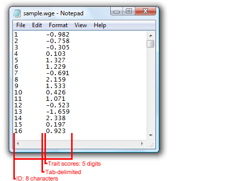
(b) WinGen Item parameter data file (*.wgi) – ‘tab-delimited’
Format: [Item#][Model][# of categories][a-parameters][b-parameters][c-parameters]
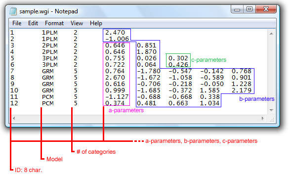
Models: 1PLM, 2PLM, 3PLM, NON, GRM, PCM, GPCM, NRM, RSM, and/or MC3PLM
1PLM: One Parameter Logistic Model
2PLM: Two Parameter Logistic Model
3PLM: Three Parameter Logistic Model
GRM: Graded Response Model
PCM: Partial Credit Model
GPCM: General Partial Credit Model
NRM: Nominal Response Model
RSM: Rating Scale Model
MC3PLM: Multidimensional Compensatory Three Parameter Logistic Model
NON: Non-Parametric Model
NOTE: When the non-parametric model is used, another format should be used as following:
[Item#][‘NON’][# of evaluation points between -3.0 and 3.0 on the theta scale][list of probabilities for each evaluation point]
(c) WinGen item Response data file (*.wgr) – ‘space-delimited’
Format: [Examinee ID][2 spaces][Response string]
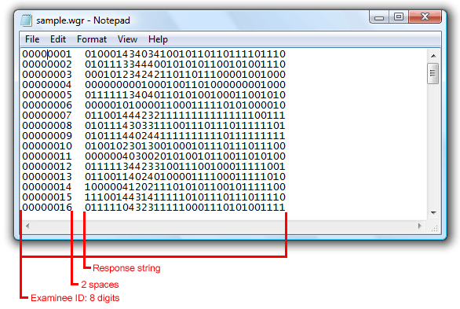
Naming Rules for Simulated Response Data Files
When a user generates more than one replication of the data and/or generates DIF/IPD data, WinGen automatically modifies the response data file name to organize a set of response data files generated. The naming rules WinGen uses are summarized in Table 4.2.
Table 4.2 Naming Rules for Response Data Files
|
Modified File Name |
Explanation |
|
filename |
a single data set |
|
filename_1, filename_2, …, filename_n |
n sets of replicated data |
|
filename_r |
a single data set for a reference group in DIF/IPD study |
|
filename_f |
a single data set for a focal group in DIF/IPD |
|
filename_r_1, filename_r_2, …, filename_r_n |
n sets of replicated data for a reference group in DIF/IPD study |
|
filename_f1_1, filename_f1_2, filename_f2_1, filename_f2_2, …, filename_fm_n |
n sets of replicated data for m-th focal group |
|
* the file extension for response data files, ‘*.wgr’, is skipped in the table |
|
Advanced Uses of WinGen
Generating Response Data with DIF / IPD
There are two ways for generating response data with DIF/IPD: (a) direct input mode, and (b) multiple file read-in mode.
(a) Direct Input Mode
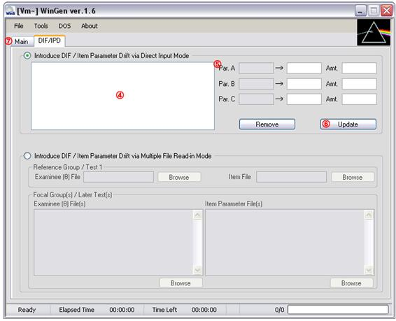
NOTE: Direct Input Mode supports only the 1PLM, 2PLM, and 3PLM. In order to introduce DIF/IPD on the items with other models, Multiple File Input Mode should be used.
① Make sure examinee data generated in Step1 or a data set is opened at ‘File>Open>Examinee Data’
② Make sure item parameter data generated in Step2 or a data set is opened at
‘File>Open>Item Parameter Data’
Then, select items that are to be with DIF/IPD
③ Click on ‘DIF/IPD’ tab
④ The items selected at ③ should be shown in the box. Select an item to introduce DIF/IPD on the item
⑤ The original parameters of the item selected should be in the first column. Specify either item parameter with DIF/IPD in the second column or the amount of DIF/IPD in the third column
⑥ Click on ‘Update’ button. The amount of DIF/IPD should be reflected In the box of ③. Go on the process of ③, ④, and ⑤ for all the items to which you want to introduce DIF/IPD
⑦ Click on ‘Main’ tab
⑧ Specify the name of response data file by clicking on ‘Browse’
⑨ Check the check box and specify the number of replications if replicated studies are desired
⑩ Adjust Options at ‘Tools>Options’
⑪ Click on the blue ‘Generate Response Data Set(s)’ button. The data set should be seen by opening up the file with the extension of ‘.wgr’
(b) Multiple File Read-in Mode
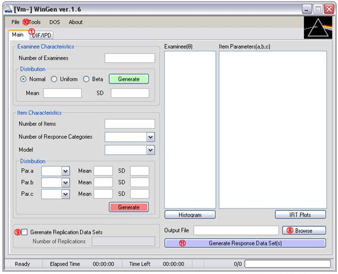
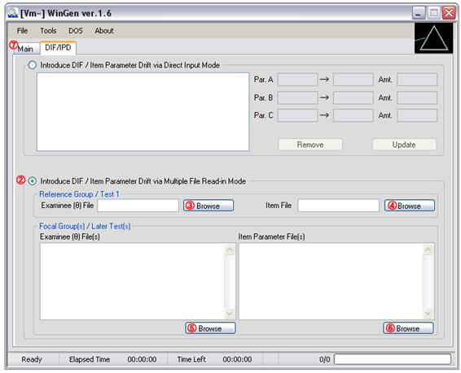
① Click on ‘DIF/PD’ tab
② Click on the radio button in the bottom (‘Introduce DIF/IPD via Multiple File Read-in Mode)
③ Click on ‘Browse’ button and specify an examinee data file for a reference group
④ Click on ‘Browse’ button and specify an item parameter data file for a reference group
⑤ Click on ‘Browser’ button and specify an examinee data file for all focal groups
Or, specify examinee data files exactly as many as the number of focal groups
⑥ Specify item parameter data files exactly as many as the number of focal groups
⑦ Click on ‘Main’ tab
⑧ Specify the name of response data file by clicking on ‘Browse’
⑨ Check the box and specify the number of replications if replicated studies are desired
⑩ Adjust Options at ‘Tools > Options’
⑪ Click on the blue ‘Generate Response Data Set(s)’ button. The data set should be seen by opening up the file with the extension of ‘.wgr’
Generating Multidimensional Item Response Data
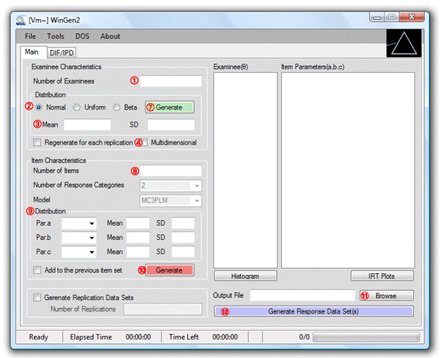
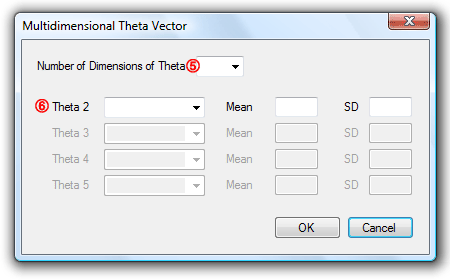
① Specify the number of examinees
② Select type of score distribution
③ Specify mean and standard deviation for the normal distribution
or, specify minimum and maximum value for a uniform distribution
or, specify a and b parameters for a beta distribution
④ Click on the checkbox, ‘Multidimensional’. A Dialog box will pop up.
⑤ Select the number of dimensions (up to 5)
⑥ Select type of distribution and specify the characteristics of the distribution for each dimension. Dimensions 2 to 5 can be set to be correlated with the dimension 1 by selecting ‘Correlated’. Click on ‘OK’ button.
⑧ Specify the number of items. The number of response categories is automatically set to ‘2’ since in this version of WinGen only dichotomous response data can be simulated. The model is automatically set to ‘MC3PLM’.
⑨ Select distribution of item parameters and specify properties of the distributions
⑩ Click on the red ‘Generate’ button
⑪ Specify the name of the response data file by clicking on ‘Browse’
⑫ Click on the blue ‘Generate Response Data Set(s)’ button. The data set can be seen by opening up the file with the extension of ‘.wgr’
Using Syntax Files and Cue Files
A user can use a syntax file to run WinGen instead of point-and-click on the graphic interface. Syntax files for WinGen can be composited using any kind of text editor software such as ‘Notepad’ or ‘TextPad’.
Table 5.1 Commands / Options Used in the WinGen Syntax File
|
Line / Description |
Commends / Options |
|
Line1. Examinee Data Characteristics
* ‘skip’ option lets WinGen skip generating examinees’ data, and WinGen will use examinees’ data which currently is loaded in the examinees’ theta box for simulating the response data.
|
[# of examinees], [type of distribution],[mean/min/a],[SD/max/b],[‘replicate’ or nothing] |
|
[‘skip’] |
|
|
[‘file’],[full filename of the examinee data (*.wge) including the path (the name of the folder)] |
|
|
[‘MIRT’],[# of examinees],[# of dimensions],[‘replicate’ or nothing] Followed by [distribution for the first dim.],[mean/min/a],[SD/max/b] [distribution for the second dim.],[mean/min/a],[SD/max/b] …… |
|
|
Line2. Item Data Characteristics
* ‘skip’ option lets WinGen skip generating item parameters, and WinGen will use item parameter data which currently is loaded in the item parameter box for simulating the response data. |
[# of items],[# of response categories],[model],[distribution for item parameter],[mean/min/a],[SD/max/b],…. |
|
[‘skip’] |
|
|
[‘file’],[full filename of the item data (*.wgi) including path the (the name of the folder)] |
|
|
Line3. Name of Response Data File |
[full name of the response data (*.wgr) including the path where the simulated response data will be saved] |
|
Line4. Replication
|
[’replication’],[# of replications if you chose ‘replication’] |
|
[‘1’] |
|
|
Line5. Scale (Normal or Logistic)
|
[’logistic’] |
|
[‘normal’] |
|
|
Line6. Seed Value
|
[’random’] |
|
[SEED for examinees],[SEED for items],[SEED for responses] |
|
|
Line7. Programs for Estimating Parameters
* ’auto’ option can be used only for dichotomous response data sets.
|
[’none’] |
|
[‘Bilog-MG’ or ‘Parscale’ or ‘Multilog’],[‘auto’] |
|
|
[‘Bilog-MG’ or ‘Parscale’ or ‘Multilog’],[full filename including the path of the sample syntax file for the program] |
|
|
Line8. A Batch to Run Programs for Estimating Parameters
* the option ‘batch’, ‘run’, ‘item’, and ‘score’ trigger the options of ⑧, ⑨, ⑩, and ⑪ in the Option dialog. See Section 4. ‘Options’ above for details.
|
[’none’]
|
|
[‘batch’]
|
|
|
[‘batch’],[‘run’]
|
|
|
[‘batch’],[‘run’],[‘item’]
|
|
|
[‘batch’],[‘run’],[‘item’],[‘score’] |
|
|
* The commands/options italicized are the places where your inputs need to be placed. ** The commands/options in quotation marks are the actual commands/options to be input except the quotation marks. *** Each line of syntax is delimited by a comma (’,’). There should be no space before and after the comma. |
|
Example #1: 3,000 examinees and 50 items with 2PLM
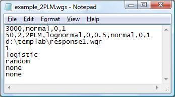
WinGen will generate 3000 theta scores from a normal distribution with a mean of 0 and a standard deviation of 1. Then, WinGen will generate 50 items with 2PLM (‘a’ parameters from a lognormal distribution with a mean of 0 and a SD of 0.5, and. ‘b’ parameters from a normal distribution with a mean of 0 and a SD of 1). WinGen will store simulated response data into ‘d:\templap\responses1.wgr’ WinGen does not replicate data (i.e., just simulate data one time). The response data will be simulated based on the logistic model scale (D=1.0). SEED values will be randomly chosen. WinGen will not generate syntax files for the programs for estimating parameters and WinGen will not generate a batch file, according to the specifications of the user.
Example #2: Reading-in examinee and item data from files
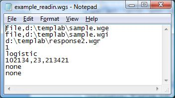
WinGen will read-in examinees’ data from the file named ‘d:\templab\sample.wge’ Then, WinGen will read-in item parameter data from ‘d:\templab\sample.wge’ WinGen will store simulated response data into ‘d:\templap\responses2.wgr’ WinGen does not replicate data (i.e., just simulate data one time). The response data will be simulated based on the logistic model scale (D=1.0). SEED values will be 102134, 23,213421 for examinees, items, and responses, respectively although SEED values for examinees and items will not be used since the user had WinGen read-in from files . WinGen will not generate syntax files for the programs for estimating parameters and WinGen will not generate a batch file, according to the specifications of the user.
Example #3: Generating examinees, using existing items in memory, replicating, and estimating
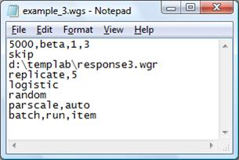
WinGen will generate 5000 examinee theta scores from a beta distribution with the distribution parameters of 1 and 3. Then, WinGen will read-in item parameter data from ‘d:\templab\sample.wge’ WinGen will store simulated response data into ‘d:\templap\responses3.wgr’ (actually, the response files will be saved with the name of ‘reponse3_1.wgr’, ‘reponse3_2.wgr’, ‘reponse3_3.wgr’, ‘reponse3_4.wgr’, and ‘reponse3_5.wgr’ since you have a syntax for replicating this study 5 times). The response data will be simulated based on normal metric scale (D=1.7). SEED values will be randomly chosen. WinGen will generate syntax files for PARSCALE automatically (not from a sample code), and will generate a batch file to run PARSCALE for the 5 replications. PARSCALE will estimate only the item parameters.
Example #3: Simulating multidimensional IRT data (2 dimensions)
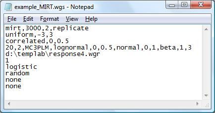
WinGen will generate 3000 examinees’ theta for two dimensions. The first theta distribution will be drawn from a uniform distribution between –3 and 3. The vector of theta for the second dimension will be correlated with the first dimension of theta. Then, 20 items with MC3PLM will be generated (a-parameters from a lognormal distribution, b-parameters from a normal distribution, and c-parameters from a beta distribution). WinGen will store simulated response data into ‘d:\templap\responses4.wgr’. WinGen will not replicate this study. The response data will be simulated based on logistic model scale (D=1.0). SEED values will be randomly chosen. WinGen will not generate syntax files for the programs for estimating parameters. WinGen will not generate a batch file.
Cue File
A cue file is kind of a batch file with which WinGen runs multiple syntax files. It is simply a list of full file names of the syntax files. A cue file can be executed at “File>Open and Run> Cue File” on the menu bar.
Example of a Cue File
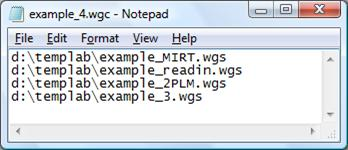